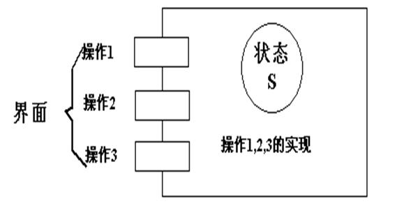
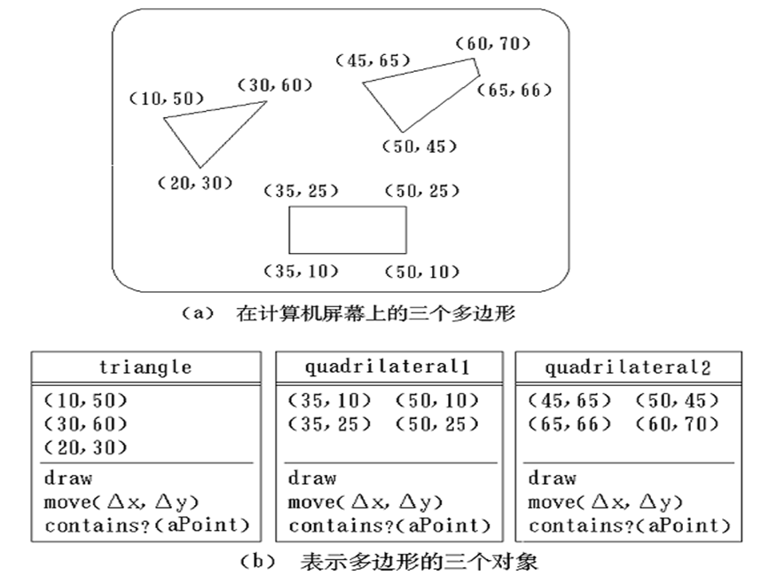
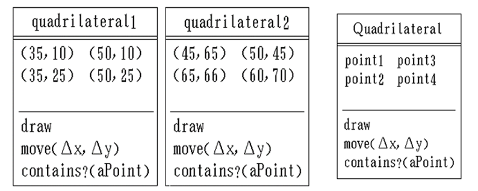
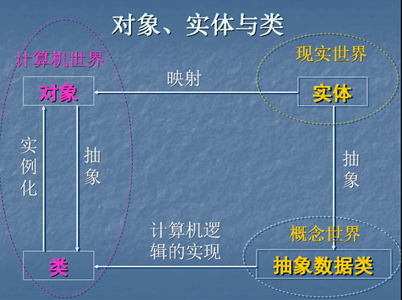
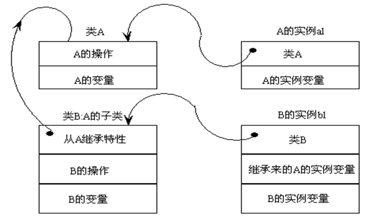
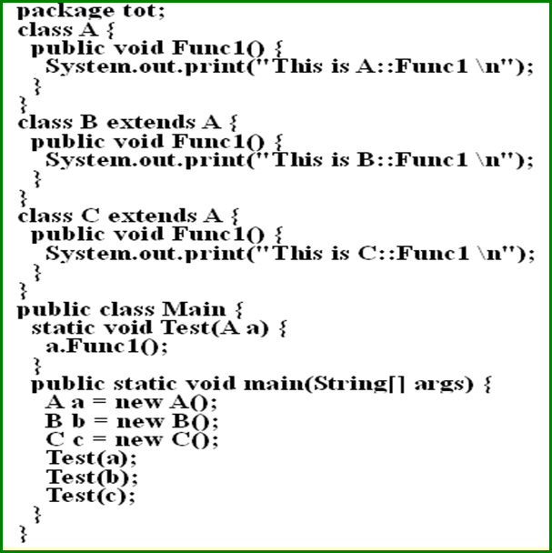
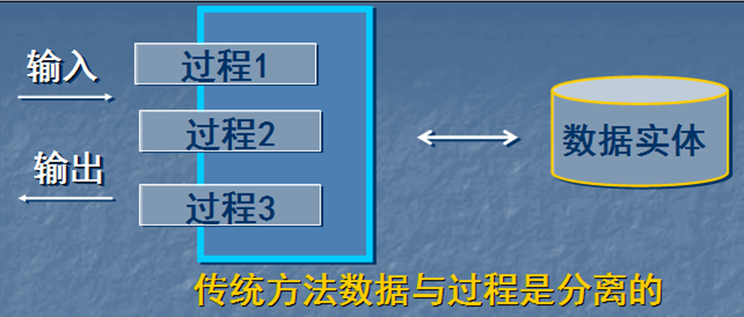
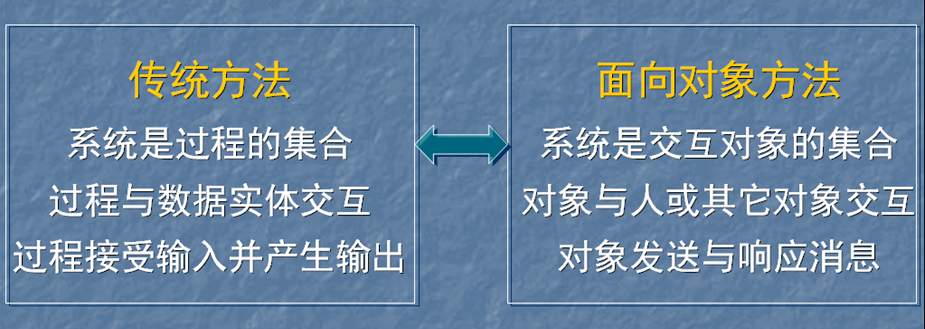

1.概念
1.1对象
（1）定义
具有相同状态的一组操作的集合，对状态和操作的封装。
（2）形象表示

（3）示例
在计算机屏幕上画多边形，多边形是由有序顶点集定义的对象。操作包括draw（在屏幕显示它）、move（移动）及contains（检查某特殊点是否在多边形内部）。

1.2类
对具有相同状态和相同操作的一组相似对象的定义。

类是一个抽象数据类型。
1.3实例
实例是由某个特定类所描述的一个具体对象。

1.4消息
要求某对象执行某个操作的规格说明。
三部分组成：
- 接收消息的对象
- 消息名
- 0或多个变元
1.5方法和属性
（1）方法
对象执行的操作，即类中定义的服务。
如：draw()，要给出实现代码。
（2）属性
类中所定义数据，对客观世界实体具体性质的抽象。
如：Quadrilateral类中的point1、point2、point3、point4。
1.6继承
子类自动共享基类中定义的属性和方法的机制。

1.7多态
在类等级不同层次可共享一个方法名，不同层次每个类按各自需要实现这个方法。
A是基类，B和C是A的派生类，多态函数Test参数是A的指针，Test函数可以引用A、B、C的对象。

优点
- 提高程序可复用性（接口设计的复用，不是代码实现复用）
- 派生类的功能可被基类指针引用，提高程序可扩充性和可维护性。
1.8重载
（1）重载
在同一作用域内，参数特征不同的函数可使用相同的名字。
优点：
- 调用者不需记住功能雷同函数名，方便用户；
- 程序易于阅读和理解。
（2）运算符重载
同一运算符可施加于不同类型操作数上面。
2.与传统方法对比
2.1传统方法

2.2面向对象方法
2.3比较

3.优点
3.1与人类习惯思维方法一致
对象是对现实世界正确抽象，问题空间和解空间结构一致。
3.2稳定性好
软件系统结构根据问题领域模型建立，功能需求变化不会引起软件结构整体变化，作局部性修改。
如从已有类派生新子类实现功能扩充或修改。
3.3可重用性好
传统软件重用技术：标准函数库。
面向对象重用技术：类，派生类和创建类的实例
3.4以开发大型软件产品
封装性好，易于分解，易于合作开发。
3.5可维护性好
稳定性好、容易修改、容易理解、易于测试和调试。